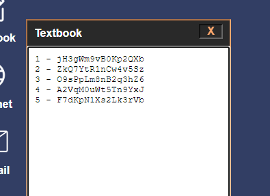
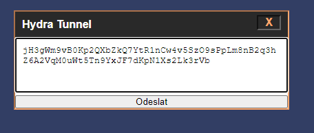

Kody které najdeš musíš dát do Hydra tunnelu bez 1 -, 2 - atd.
 kody na fotkách nejsou ty co najdeš ve hře.. a také se občas koukni do Ezmailu věř mi.
Dávej pozor aby si neměl neviditelné mezery v Hydra Tunnelu.
Hráč je postaven do role mladého studenta, který se rozhodne připojit k tajemné online hackerské skupině zvané Hydra. Tato skupina je známá svou mocí a nelegálními aktivitami na Darkwebu. Aby se mohl připojit, musí nejprve splnit náročnou výzvu: najít všech pět klíčů, které jsou roztroušeny po temných koutech internetu, na speciálních stránkách, které jsou přístupné pouze těm, kteří mají dostatek znalostí a odhodlání. Hra se zaměřuje na to, jak hráč prochází těmito nebezpečnými webovými stránkami, čelí různým výzvám a hledá stopy, které ho dovedou ke klíčům. Každý klíč je skrytý v šifrovaných souborech, nástrahách a překážkách, které si žádají velkou míru soustředění a dovedností v navigaci po Darkwebu. Avšak čas je proti hráči. Hráč zjistí, že pokud klíče nebudou nalezeny do půlnoci, ztratí svou šanci připojit se k Hydře, a co je horší, bude mu hrozit smrt. Najatý vrah, který je poslán, aby zlikvidoval každého, kdo neúspěšně hledá klíče, se přiblíží a v okamžiku, kdy odbije půlnoc, zabije hráče. Hráč musí překonat své limity a včas najít všechny klíče, než bude jeho osud zpečetěn a jeho život navždy ukončen. Během této výzvy jsou hráči vystaveni nejen technologickým a logickým hádankám, ale i psychologickému tlaku, protože každý klíč přináší novou informaci, která jej přiblíží k rozhodující chvíli — a ke smrti, pokud nebude včas úspěšný.